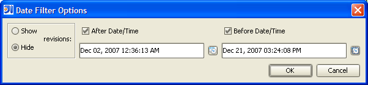

Date Filter
From within the revision graph window, the default date filters from the settings dialog
can be overridden. The filter can be either to include or exclude the revisions that
match the filter based on the show/hide toggle. An after date/time, a before date/time,
or both an after and before date/time can be used. The date/time can either be typed in
manually or selected from the calendar/clock dialog. The accepted format for the
date/time is:
MMM dd, yyyy hh:mm:ss a
Selecting the date/time from the calendar/clock dialog will automatically put the value in
the correct format.
